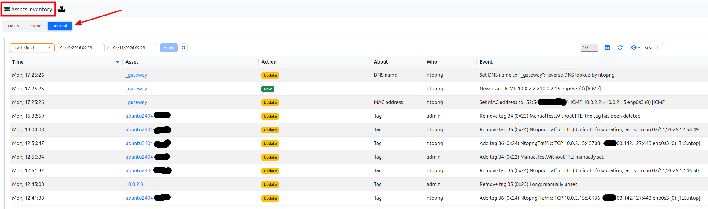

12. Assets Journal
The assets inventory keeps the current state of the hosts seen on the network. The assets journal records how that state has changed over time: one entry for every event (an asset created or deleted, a field changed, a tag added or removed), with who caused it and why.
Note
This feature is available only from Enterprise L license, with the assets inventory enabled.
The journal is disabled by default. It can be enabled from Settings > Preferences > Behaviour Analysis (section Assets), with the Enable Assets Journal preference. When it is enabled a Baseline entry is written for every asset already in the inventory; while it is disabled nothing is recorded, and when it is enabled again a new Baseline is written.
12.1. Viewing the Journal
The journal is shown in two places:
The Journal tab of the Assets Inventory page (Network menu, see Assets Inventory): the events of all the assets of the selected interface.
The Journal tab of the details page of an asset: the events of that asset only.


The Journal tab of the Assets Inventory page

The Journal tab of the details page of an asset
Each row is an event, newest first:
Time: when the event happened.
Asset: the asset (only in the Assets Inventory page). Click it to open its details.
Action: Baseline, New, Update, Delete or Note (see below).
About: what has changed, e.g. MAC address, DNS name, TCP fingerprint, Operating System or Tag. Empty when the event is about the asset as a whole.
Who:
ntopngfor the events detected automatically, otherwise the user that caused the event (e.g.adminfor a tag set by hand).Event: what happened and why (see Causes). For an event seen in the traffic, it shows the flow (connection) where it has been seen.
By default the last month is shown: choose another time interval with the selector above the table and click Apply. The table can be searched (the IP of the asset, the user, the action, the subaction and the values of the event), and the columns shown can be chosen with the eye icon.
The tabs are enabled only when the journal is enabled (see above): otherwise they are disabled, and a tooltip says how to enable it. Without an Enterprise L license the tooltip says that an upgrade is needed.
12.2. Entries
Every entry has:
Event time: when the event happened (epoch).
Created time: when the entry has been written (epoch).
Who:
ntopngfor the events detected automatically, otherwise the name of the user that caused the event from the GUI or the REST API.Action: see below.
Subaction (About in the GUI): what the entry is about:
os(the Operating System tags),tag(the other tags), the name of the field (ip,mac,vlan,tcp_fingerprint,dhcp_fingerprint,dns_name,kerberos_name),usernames(the usernames of the host), empty for the asset as a whole (Baseline, New, Delete, Manual).Asset: the interface id, the type of the asset (
host) and its key, as in the assets inventory.Message: what happened, and its cause.
Actions:
Baseline: the asset was already in the inventory when the journal has been enabled (one entry per asset, no details).
New: the asset has been created. The entry is followed by one Update entry for each field with a value (except the ones in the key of the asset, i.e. IP address and VLAN) and for each tag of the new asset.
Update: one property of the asset changed or has been added/removed (i.e. a new tag has been set or a fingerprint changed).
Delete: the asset has been deleted.
Manual (Note in the GUI): a free text note, written by a user or by an integration.
The fields of the host assets currently recorded are: IP address, MAC address, VLAN, TCP fingerprint, DHCP fingerprint, DNS name, Kerberos machine account, the usernames and the tags. The name of the host is not recorded, as it is derived from the other names of the host (DNS, DHCP, mDNS, …).
The usernames are the users seen in the traffic of the host, each with the
protocol it has been seen with (e.g. alice@corp.local (Kerberos), the
client of a Kerberos authentication accepted by the KDC). A host keeps the 3
most recent ones: a new one replaces the one seen least recently. Each username
added or removed has its own entry and cause.
12.3. Causes
The message always tells the cause of the event, with all the information available. An event caused by the traffic reports the flow it has been seen in, with the interface that has seen it (with a view interface, the viewed interface the flow belongs to):
New asset: UDP 192.168.1.93:51409->192.168.1.1:53 eth0 (0)
Set MAC address to "10:13:31:F1:39:76": UDP 192.168.1.93:51409->192.168.1.1:53 eth0 (0)
Add tag 0 (0x00) DNS Server: UDP 192.168.1.93:52340->192.168.1.1:53 eth0 (0) [DNS]
Add tag 13 (0x0d) Non-PQC Compliant: risk Non PQC Compliant Flow - TCP 192.168.1.93:61562->92.122.247.92:443 eth0 (0) [TLS]
Update TCP fingerprint from "2_128_64240_47466ece" to "2_64_64240_789c1d1f": TCP 172.16.1.137:39970->116.203.142.127:80 eth0 (0) [HTTP.ntop]
Remove tag 31 (0x1f) Windows: replaced by tag 28 (0x1c) Linux, Linux (TCP Fingerprint) - TCP 172.16.1.137:39970->116.203.142.127:80 eth0 (0)
Add username dave@corp.local (Kerberos): UDP 10.0.0.5:50012->10.0.0.1:88 eth0 (0) [Kerberos]
Remove username alice@corp.local (Kerberos): replaced by dave@corp.local (Kerberos) - UDP 10.0.0.5:50012->10.0.0.1:88 eth0 (0) [Kerberos]
A flow is shown as <protocol> <client>-><server> <interface name> (<interface id>) [<application>],
the application only when it is known. When the cause has an evidence other
than the flow (the risk of a tag bound to a risk, the fingerprint or the
User-Agent an Operating System has been learnt from) the evidence comes first,
followed by a dash (-) and the flow.
The flow of a New entry is the first flow of the host (the one that has created it), shown without application, as it was not yet known when the host has been created.
The other causes:
Event |
Example |
|---|---|
Tag set or unset by a user on a host |
|
Tag deleted |
|
Tag expired (see Asset Tag Expiration (TTL)) |
|
Tag of a host in the network configuration |
|
Name resolved by ntopng |
|
Asset deleted by a user |
|
Assets not seen for a while deleted |
|
Duplicated asset deleted |
|
Assets imported |
|
12.4. Storage
The entries are stored in the assets_journal table, in ClickHouse when
available, otherwise in the SQLite database of the interface. Entries are
never deleted: not by the data retention, and not when their asset is
deleted, so that the history of a deleted asset is still available.
Besides the Journal tabs (see Viewing the Journal), the entries of an asset can also be read with SQL, e.g. with ClickHouse:
SELECT event_time, who, action, subaction, message_id, message_values, message
FROM ntopng.assets_journal
WHERE ifid = 0 AND key = '0_192.168.1.1@0'
ORDER BY event_time, created_time
The messages are stored as a template (message_id) and its values
(message_values, JSON), and shown in the language of the user; free text
notes are stored in message.
12.5. Lua API
The journal can be read and written by Lua code (e.g. by integrations) with the
assets_journal module (pro/scripts/lua/modules/assets_journal.lua):
assets_journal.get(ifid, key, from, to): the entries of an asset in a time interval (epochs in seconds, both ends included), oldest first, with the text of their messages.assets_journal.add(entry)andassets_journal.addBatch(entries): write one or more entries. They can be called concurrently, never raise an error, and do nothing while the journal is disabled. An entry has anaction(assets_journal.actions), an optionalsubaction(e.g. the name of the integration), and either a free textmessageor a template (message_id,message_values).
An entry written by an integration:
local assets_journal = require "assets_journal"
assets_journal.add({
ifid = 0,
key = "0_192.168.1.1@0",
who = assets_journal.currentUser(), -- "ntopng" outside of a request
action = assets_journal.actions.manual,
subaction = "wazuh",
message = "Moved to the server room",
})